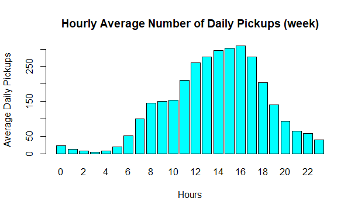

ARCH 6306/6050, DSBA 6010, ITIS 8010/6010: Wednesdays 6pm-8:30pm, Taught Online
Dr. Dimitris Papanikolaou | dpapanik@uncc.edu | Urban Synergetics Lab | https://urbansynergeticslab.net
This webpage is providing visualized information about the bike sharing system in Washington DC. Capital Bikeshare is the provider of the bike-sharing service in the city. It currently owns 4500+ bikes and 596 stations across 7 jurisdictions in the US. The data was captured from its website https://www.capitalbikeshare.com.The data includes several layers of information such as: the bike ID, time and location of the start and the end of each ride, the user’s membership condition(member or casual), and the bike type(electric, classic, or docked). By analyzing and visualizing those data, we are trying to answer questions such as: How the demand for bikes in DC changes during a normal weekday on an hourly basis; From where most bike rides usually start; What destination the bike users are usually travelling to. The final goal of this analysis is to assess the overall performance of the sharing bike system in Washington DC, and propose possible solutions to improve the efficiency of the whole system so as to enhance users experience.
The map shows clusters of trip start locations across Wasington DC for the week of 1/3/21-1/9/21. The biggest cluster can be seen near the capital building and other clusters are located around Arlington and near the Ronald Reagan Washington National Airport.
The number of daily pickups during weekdays dropped from 9 a.m. to 10 a.m. before stepping up and reaching the peak at 17 p.m.
The number of daily pickups for the week increased gradually from 5 a.m. to 4 p.m..
The afternoon peaks are the greatest. The capital bikeshare system should meet the demand particularly from 12 p.m. to 5 p.m. by making bikes and docks available.
The average duration of trips is 14 min 45 s and about 67% of users are Capital Bikeshare members.
A range of 11 to 2674 pickups per hour is registered around the 596 stations.
Saturday has the highest average number of pickups, about 915 a day, representing almost two times the number recorded on Monday.
These maps show how the usage of bikes are influenced from the existing DC metro lines. We see that there are hot spots following the Silver and Orange metro lines into Arlington, VA and following the Blue line to the airport. We also see several hot spots that are not on metro lines. These spots could provide some insight for future station locations.
This map shows that most of the trips are clustered around the center of Washington D.C. These trips are relatively short with only a few long distance trips made to the outlying areas across its borders. Most of these cross border trips are following the existing metro lines.
This analysis explores the bike sharing system visualized in Washington DC using data, barcharts, heatmap and connection map. Our initial visulizations are helpful in providing interesting first insights to the data from Capital Bikeshare. They also provide several new directions we can focus on because of the new questions they have shown us. We hope to enhance our analysis with new data and more visulizations in order for us to find new ways in improve the efficiency of the bikeshare system.
Edited the HTML/CSS/Javascript and developed the mapbox visualizations. Edited the descriptions and cleaned data for use JavaScript.
Introduction and page layout ideas
clean and made the statistical computing & graphics (bar plots), edited the HTML JavaScript related to that section, and came up with some future questions we may address.
Description to maps, conclusion, and page layout ideas.